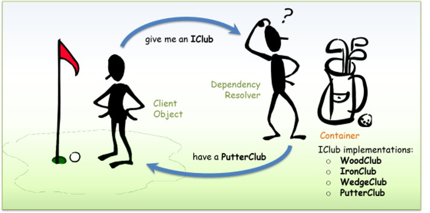
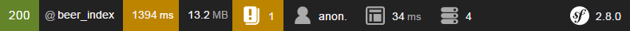
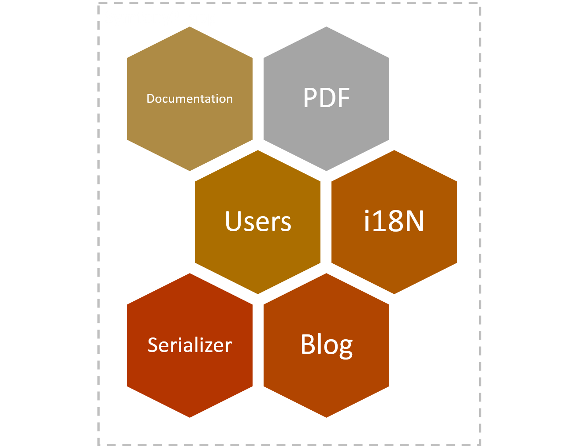
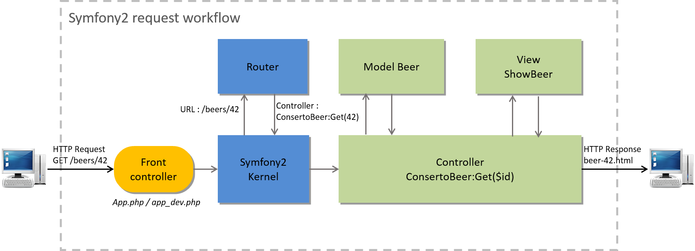
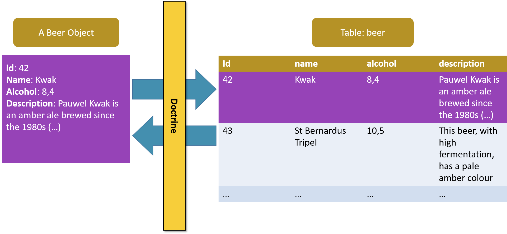
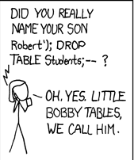
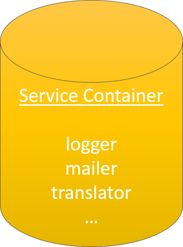
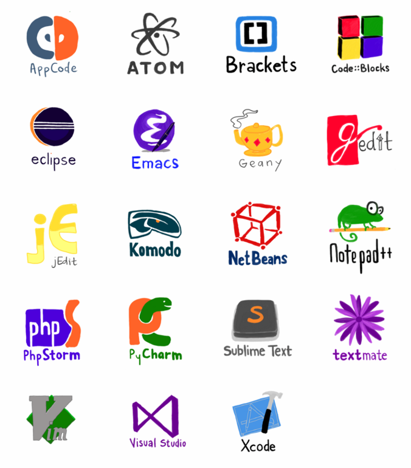

Symfony 2 basics
Maxence POUTORD
RevealJS Tips
- ESC: slide overview
- ALT + click: zoom
- B: blackout
- S: speaker notes
- Print (then ctrl + p)
Goals
- PHP OOP (recalls)
- Discovering the basics of Symfony2 and his components (Twig, Doctrine, ...)
- Realize a web app with Symfony2&MySQL
PHP OOP
POPO: Plain Old PHP Object
class Drink
{
protected $id;
protected $name;
protected $description;
public function __construct() {
//...
}
}
class Beer extends Drink
{
protected $alcohol;
protected $color;
protected $type;
public function __construct() {
//...
}
public function drinkIt() {
echo "glug glug";
}
}
Getter/Setter
class Beer
{
private $color;
//...
public function getColor() {
return $this->id;
}
public function setColor($color) {
$this->color = $color;
}
}
Instanciate new class
class Beer
{
//...
}
$myBeer = new Beer();
$myBeer->drinkIt(); //will output "glug glug"
$myBeer->setColor("blond");
$color = $myBeer->getColor();
Visibility
- public
- protected
- private

Further reading
Design Anti-Pattern: Singleton
class MySingleton
{
protected static $instance;
protected function __construct() { }
public static function getInstance()
{
if (!isset(self::$instance)) {
self::$instance = new self;
}
return self::$instance;
}
}
Design Pattern: Dependency Injection
Hollywood Principle: "Don't call us, we'll call you"

Why should I use Framework ?
- Velocity: work better (structuring developments) & faster (reusing generic modules, code generation...)
- Facilitate long-term maintenance
- Improve security
Why Symfony2 ?
- #1 in France ( employment)
- Use best practices
- Open Source
- Bundle: reusable components
- Debug toolbar (killer feature)

Projects using Symfony: Drupal, Laravel, eZ Publish, Magento, BlaBlaCar, You****(You-Know-Who)
Symfony2

What is Symfony2 ?
« Symfony is a set of PHP Components, a Web Application framework, a Philosophy, and a Community — all working together in harmony. »
Bundle concept
- Bundle = Plugin
- "Everything is a bundle in Symfony"

Symfony2 MVC approach

So, Symfony2 is a MVC Framwork ?
Composer
- Tool for dependency management in PHP (Like node's npm, ruby's bundler...)

RTFM
Getting started
# 1. install Symfony Installer (Linux/OS X)
$ sudo curl -LsS http://symfony.com/installer -o /usr/local/bin/symfony
$ sudo chmod a+x /usr/local/bin/symfony
# 1. install Symfony Installer (Windows)
$ php -r "file_put_contents('symfony', file_get_contents('http://symfony.com/installer'));"
# Download&Install Symfony
$ symfony new beerApp
# OR (choose a version)
$ symfony new beerApp 2.8
# 3. Create the first bundle
$ php app/console generate:bundle --format=yml
Symfony 2 Architecture
4 Folders:
- app: application configuration, layout templates...
- AppKernel.php: register bundle
- src: project's PHP code (yours bundles)
- vendor: Dependencies (other bundles) - Read only !
- web: web root directory
- app.php: production endpoint
- app_dev.php: development endpoint
Symfony2's components
Controller
Request to Response

Routing
# app/config/routing
conserto_beer:
resource: "@ConsertoBeerBundle/Resources/config/routing.yml"
prefix: /
# src/Conserto/BeerBundle/Resources/config/routing.yml
conserto_beer_show:
path: /{id}/show
defaults: { _controller: "ConsertoBeerBundle:Beer:show" }
conserto_beer_update:
path: /{id}/update
defaults: { _controller: "ConsertoBeerBundle:Beer:update" }
methods: [POST, PUT]
Lost ?
$ php app/console debug:router
$ php app/console router:match /beer/4/show
Routing advanced
beer_show:
path: /beers/{_locale}/{brand}/{name}.{_format}
defaults: { _controller: ConsertoBundle:Beer:show, _format: html }
schemes: [https]
requirements:
_locale: en|fr
_format: html|rss
year: \d+
Twig
In a nutshell:
- PHP/HTML separation
- More readable syntax
- Add security
- Fully documented (http://twig.sensiolabs.org)
//Before
<?php echo $var; ?>
{# After #}
{{ var }}
Twig: before/after
<ul>
<?php
if (count($beers) > 0) {
foreach ($beers as $aBeer) {
echo "<li>".$aBeer->name." have ".$aBeer->alcohol." alcohol degree</li>";
}
} else {
echo "<li>no beer found</li>";
}
?>
</ul>
{% for aBeer in beers %}
- {{ aBeer.name }} have {{ aBeer.alcohol }} alcohol degree
{% else %}
- no beer found
{% endfor %}
TWIG: filters
{{ "now"|date("m/d/Y") }} // 2/11/2015
{{ 'abcd...'|reverse }} //...dcba
{{ '12345'|slice(1, 2) }} //23
{{ 101.51|round }} //102
{# Multiple filters #}
{{ 'abcd...'|slice(1, 2)|reverse }} //cb
TWIG: Functions
{{ path('conserto_beer') }}
{{ path('conserto_beer_show', { 'id': 42 }) }}
{{ path('conserto_beer_show', { 'id': entity.id }) }}
{{ dump(myObject) }}
Code separation
<!DOCTYPE html>
<html>
<head>...</head>
<body>
{% block body %}{% endblock %}
</body>
</html>
{# src/Conserto/Bundle/BeerBundle/Resources/views/Beer/index.html.twig #}
{% extends '::base.html.twig' %}
{% block body %}
{% if beer %}
Beer: {{ beer }}!
{% endif %}
{% endblock %}
Entities
- Entity = Model (MVC)
- Looks like POJO: simple PHP class with attributes, constructor, getters and setters
# Generate entity with doctrine (also generate getters&setters):
$ php app/console generate:doctrine:entity
# Database creation/update
$ php app/console doctrine:schema:create
$ php app/console doctrine:schema:update
Doctrine

Doctrine annotations
/**
* Beer
*
* @ORM\Table()
* @ORM\Entity(repositoryClass="Conserto\BeerBundle\Entity\BeerRepository")
*/
class Beer
{
/**
* @var integer
*
* @ORM\Column(name="id", type="integer")
* @ORM\Id
* @ORM\GeneratedValue(strategy="AUTO")
*/
private $id;
/**
* @var string
*
* @ORM\Column(name="name", type="string", length=255)
*/
private $name;
//...
Doctrine principle
$myBeer = new Beer();
$myBeer->setName('Kwak');
$myBeer->setAlcohol(8.4);
$anotherBeer = new Beer();
$anotherBeer->setName('Tripel Karmeliet');
$anotherBeer->setAlcohol(8.4);
//Step 1: Retrieve EntityManager service
$em = $this->getDoctrine()->getManager();
//Step 2: persist
$em->persist($myBeer);
$em->persist($anotherBeer);
//Step 3: Flush (generate&execute SQL)
$em->flush();
Doctrine: retrieve object
$em = $this->getDoctrine()->getManager();
$aBeer = $em->getRepository('ConsertoBeerBundle:Beer')->find($id);
$beers = $em->getRepository('ConsertoBeerBundle:Beer')->findAll();
$aBeer = $em->getRepository('ConsertoBeerBundle:Beer')->findOneByAbbey($abbey);
$beers = $em->getRepository('ConsertoBeerBundle:Beer')->findByAlcohol($alcohol);
Doctrine: update/delete
$em = $this->getDoctrine()->getManager();
//Update
$aBeer = $em->getRepository('ConsertoBeerBundle:Beer')->find(42);
aBeer->setAlcohol = 8.4;
$em->flush();
//Delete
$aBeer = $em->getRepository('ConsertoBeerBundle:Beer')->find(51);
$em->remove($beer);
$em->flush();
Doctrine: custom request
//src\Conserto\BeerBundle\Repository\BeerRepository.php
public function findByAbbeyAndAlcohol($abbey, $alcohol)
{
$qb = $this->createQueryBuilder('b');
$qb->where('b.abbey = :abbey')
->setParameter('abbey', $abbey)
->andWhere('b.alcohol < :alcohol')
->setParameter('alcohol', $alcohol)
->orderBy('b.name', 'DESC');
return $qb
->getQuery()
->getResult()
;
}
Doctrine: relations
- One-to-one (1..1)
ex: Beer--Image - Many-to-one (n..1)
ex: Abbey--Beer - Many-to-many (n..n)
ex: Beer--Distributor
Form component
//src\Conserto\BeerBundle\Form\BeerType.php
public function buildForm(FormBuilderInterface $builder, array $options)
{
$builder
->add('name')
->add('alcohol')
->add('desciption')
;
}
//src\Conserto\BeerBundle\Controller\BeerController.php
$beer = $em->getRepository('ConsertoBeerBundle:Beer')->find($id);
$editForm = $this->createForm(BeerType::class, $beer, array(
'action' => $this->generateUrl('conserto_beer_update'),
'method' => 'PUT'
));
return $this->render('ConsertoBeerBundle:Beer:edit.html.twig', array(
'beer' => $beer,
'edit_form' => $editForm->createView()
));
{{ form(edit_form) }} {# Will generate a HTML Form #}
Bootstrap form theme
(since Symfony 2.6)
# app/config/config.yml
twig:
form_themes:
- 'bootstrap_3_layout.html.twig'
Remember:
never trust user input!

Form validation
<?php
use Symfony\Component\Validator\Constraints as Assert;
class Beer
{
//...
/**
* @var string
*
* @ORM\Column(name="name", type="string", length=255)
* @Assert\NotBlank()
* @Assert\Length(
* min = 2,
* minMessage = "Your Beer must be at least {{ limit }} characters long"
* )
*/
private $name;
Service Container
Use Dependency Injection pattern

# app/config/config.yml
services:
my_mailer:
class : Conserto\HelloBundle\Mailer
arguments: [sendmail]
class WhateverController extends Controller
{
public function sendEmailAction()
{
// ...
$mailer = $this->get('aMailer');
$mailer->send('contact@beerapp.io', ...);
}
}
Tips & tricks
Code generation
Crud generation (Controller, Form, Views, Routes)
$ php app/console generate:doctrine:crud
Reverse engineering (generate entities from database)
$ php app/console doctrine:mapping:import --force AcmeBlogBundle xml
$ php app/console doctrine:mapping:convert annotation ./src
$ php app/console doctrine:generate:entities AcmeBlogBundle
Useful commands
$ alias sf='php app/console'
| list | Lists commands |
| debug:router | Displays current routes for an application |
| doctrine:generate:entity | Generates a new Doctrine entity inside a bundle |
| doctrine:generate:entities | Generates entity classes and method stubs from your mapping information |
| doctrine:schema:update | Executes (or dumps) the SQL needed to update the database schema to match the current mapping metadata |
Useful tools
- Grunt/Gulp: Task Runner (clear cache, assetics compilation...)
- Mailcatcher: catch mails
- Blackfire.io: Profiling Web Pages
Deployment
- Clear cache
- Check server configuration ($ php app/check.php)
- Use cache
- Verify your secret key (app/config/parameters.yml)
- Disable dev mode (app_dev.php)
- Customize errors pages
- Use cache !
Useful bundles
Coding standards
Please, stick the PSR (PHP Standard Recommendations)
http://www.php-fig.orgTools: PHP_CodeSniffer and PHP-CS-Fixer
.editorconfig file
# .editorconfig (editorconfig.org)
root = true
[*]
end_of_line = lf
charset = utf-8
trim_trailing_whitespace = true
insert_final_newline = true
[**.js]
indent_style = space
indent_size = 2
[**.php]
indent_style = space
indent_size = 4

Don't forget
- Refactor
- Refactor
- Refactor
- Refactor
- Refactor
- ...
About Symfony3
- Symfony2 code can run in Symfony3
- Checkout @deprecated annotation (in official doc)
- Upgrade from 2.8 to 3.0